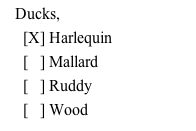

Watching wild ducks
Before you go watching wild ducks, make sure you know what a wild duck looks like.
Watching wild ducks can be calming and recreational.
Read this to learn more about what you need to have a satisfying duck-watching experience.
-
Choose a location to watch ducks.
Generally, ducks are found in wild locations, near water.
-
Pick a field guide to identify the ducks.
- Many modern duck watchers rely on the Sibley guide
- A traditional favorite is the Peterson guide
-
Find some good optics
Type
Advantages
Binoculars
Wide field of view, allows quick observations
Spotting scope
Higher magnification, better light-gathering
-
Go watch some birds.
- Walk around
- When you see one, stop
- Identify it
-
When you have definitively identified a duck, make a note in your guide.

You’ll now have a record you can keep for the rest of your life.
Once you’ve identified the duck, you can spend some time noting its
behavior.
-
Note: Don’t disturb the ducks while observing their behavior; they behave differently when humans are present.Watch how the ducks interact with one another, what they’re eating, or how and when they preen.
The fresh air, exercise, and thrill of seeing wild ducks should give you an enhanced feeling of well-being.
Don’t expect this kind of behavior: Duck Amuck
- Watch the ducks again with a camera
- Go look for other birds